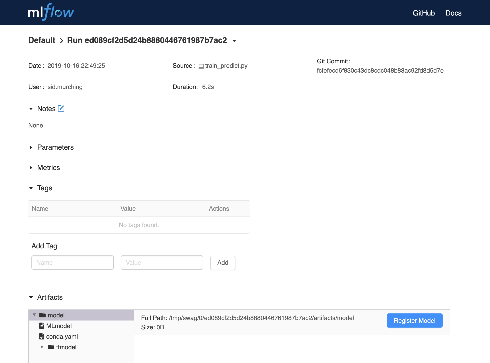
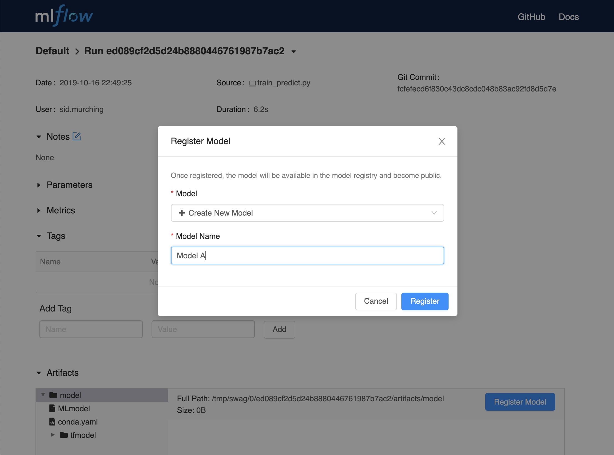
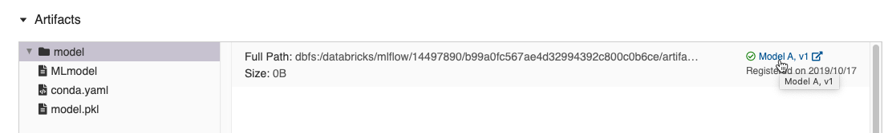

MLflow Model Registry
The MLflow Model Registry component is a centralized model store, set of APIs, and UI, to collaboratively manage the full lifecycle of an MLflow Model. It provides model lineage (which MLflow experiment and run produced the model), model versioning, stage transitions (for example from staging to production), and annotations.
Table of Contents
Concepts
The Model Registry introduces a few concepts that describe and facilitate the full lifecycle of an MLflow Model.
- Model
An MLflow Model is created from an experiment or run that is logged with one of the model flavor’s
mlflow.<model_flavor>.log_model()methods. Once logged, this model can then be registered with the Model Registry.- Registered Model
An MLflow Model can be registered with the Model Registry. A registered model has a unique name, contains versions, associated transitional stages, model lineage, and other metadata.
- Model Version
Each registered model can have one or many versions. When a new model is added to the Model Registry, it is added as version 1. Each new model registered to the same model name increments the version number.
- Model Stage
Each distinct model version can be assigned one stage at any given time. MLflow provides predefined stages for common use-cases such as Staging, Production or Archived. You can transition a model version from one stage to another stage.
- Annotations and Descriptions
You can annotate the top-level model and each version individually using Markdown, including description and any relevant information useful for the team such as algorithm descriptions, dataset employed or methodology.
- Model Alias
You can create an alias for a registered model that points to a specific model version. You can then use an alias to refer to a specific model version via a model URI or the model registry API. For example, you can create an alias named
Championthat points to version 1 of a model namedMyModel. You can then refer to version 1 ofMyModelby using the URImodels:/MyModel@Champion.
Model Registry Workflows
If running your own MLflow server, you must use a database-backed backend store in order to access the model registry via the UI or API. See here for more information.
Before you can add a model to the Model Registry, you must log it using the log_model methods
of the corresponding model flavors. Once a model has been logged, you can add, modify, update, transition,
or delete model in the Model Registry through the UI or the API.
UI Workflow
Registering a Model
From the MLflow Runs detail page, select a logged MLflow Model in the Artifacts section.
Click the Register Model button.
In the Model Name field, if you are adding a new model, specify a unique name to identify the model. If you are registering a new version to an existing model, pick the existing model name from the dropdown.

Using the Model Registry
Navigate to the Registered Models page and view the model properties.

Go to the Artifacts section of the run detail page, click the model, and then click the model version at the top right to view the version you just created.

Each model has an overview page that shows the active versions.
Click a version to navigate to the version detail page.
On the version detail page you can see model version details and the current stage of the model version. Click the Stage drop-down at the top right, to transition the model version to one of the other valid stages.
API Workflow
An alternative way to interact with Model Registry is using the MLflow model flavor or MLflow Client Tracking API interface. In particular, you can register a model during an MLflow experiment run or after all your experiment runs.
Adding an MLflow Model to the Model Registry
There are three programmatic ways to add a model to the registry. First, you can use the mlflow.<model_flavor>.log_model() method. For example, in your code:
from sklearn.datasets import make_regression
from sklearn.ensemble import RandomForestRegressor
from sklearn.metrics import mean_squared_error
from sklearn.model_selection import train_test_split
import mlflow
import mlflow.sklearn
from mlflow.models import infer_signature
with mlflow.start_run() as run:
X, y = make_regression(n_features=4, n_informative=2, random_state=0, shuffle=False)
X_train, X_test, y_train, y_test = train_test_split(
X, y, test_size=0.2, random_state=42
)
params = {"max_depth": 2, "random_state": 42}
model = RandomForestRegressor(**params)
model.fit(X_train, y_train)
# Infer the model signature
y_pred = model.predict(X_test)
signature = infer_signature(X_test, y_pred)
# Log parameters and metrics using the MLflow APIs
mlflow.log_params(params)
mlflow.log_metrics({"mse": mean_squared_error(y_test, y_pred)})
# Log the sklearn model and register as version 1
mlflow.sklearn.log_model(
sk_model=model,
artifact_path="sklearn-model",
signature=signature,
registered_model_name="sk-learn-random-forest-reg-model",
)
In the above code snippet, if a registered model with the name doesn’t exist, the method registers a new model and creates Version 1. If a registered model with the name exists, the method creates a new model version.
The second way is to use the mlflow.register_model() method, after all your experiment runs complete and when you have decided which model is most suitable to add to the registry.
For this method, you will need the run_id as part of the runs:URI argument.
result = mlflow.register_model(
"runs:/d16076a3ec534311817565e6527539c0/sklearn-model", "sk-learn-random-forest-reg"
)
If a registered model with the name doesn’t exist, the method registers a new model, creates Version 1, and returns a ModelVersion MLflow object. If a registered model with the name exists, the method creates a new model version and returns the version object.
And finally, you can use the create_registered_model() to create a new registered model. If the model name exists,
this method will throw an MlflowException because creating a new registered model requires a unique name.
from mlflow import MlflowClient
client = MlflowClient()
client.create_registered_model("sk-learn-random-forest-reg-model")
The method above creates an empty registered model with no version associated. You can use create_model_version()
as shown below to create a new version of the model.
client = MlflowClient()
result = client.create_model_version(
name="sk-learn-random-forest-reg-model",
source="mlruns/0/d16076a3ec534311817565e6527539c0/artifacts/sklearn-model",
run_id="d16076a3ec534311817565e6527539c0",
)
Fetching an MLflow Model from the Model Registry
After you have registered an MLflow model, you can fetch that model using mlflow.<model_flavor>.load_model(), or more generally, load_model().
Fetch a specific model version
To fetch a specific model version, just supply that version number as part of the model URI.
import mlflow.pyfunc
model_name = "sk-learn-random-forest-reg-model"
model_version = 1
model = mlflow.pyfunc.load_model(model_uri=f"models:/{model_name}/{model_version}")
model.predict(data)
Fetch the latest model version in a specific stage
To fetch a model version by stage, simply provide the model stage as part of the model URI, and it will fetch the most recent version of the model in that stage.
import mlflow.pyfunc
model_name = "sk-learn-random-forest-reg-model"
stage = "Staging"
model = mlflow.pyfunc.load_model(model_uri=f"models:/{model_name}/{stage}")
model.predict(data)
Serving an MLflow Model from Model Registry
After you have registered an MLflow model, you can serve the model as a service on your host.
#!/usr/bin/env sh
# Set environment variable for the tracking URL where the Model Registry resides
export MLFLOW_TRACKING_URI=http://localhost:5000
# Serve the production model from the model registry
mlflow models serve -m "models:/sk-learn-random-forest-reg-model/Production"
Adding or Updating an MLflow Model Descriptions
At any point in a model’s lifecycle development, you can update a model version’s description using update_model_version().
client = MlflowClient()
client.update_model_version(
name="sk-learn-random-forest-reg-model",
version=1,
description="This model version is a scikit-learn random forest containing 100 decision trees",
)
Renaming an MLflow Model
As well as adding or updating a description of a specific version of the model, you can rename an existing registered model using rename_registered_model().
client = MlflowClient()
client.rename_registered_model(
name="sk-learn-random-forest-reg-model",
new_name="sk-learn-random-forest-reg-model-100",
)
Transitioning an MLflow Model’s Stage
Over the course of the model’s lifecycle, a model evolves—from development to staging to production. You can transition a registered model to one of the stages: Staging, Production or Archived.
client = MlflowClient()
client.transition_model_version_stage(
name="sk-learn-random-forest-reg-model", version=3, stage="Production"
)
The accepted values for <stage> are: Staging|Archived|Production|None.
Listing and Searching MLflow Models
You can fetch a list of registered models in the registry with a simple method.
from pprint import pprint
client = MlflowClient()
for rm in client.search_registered_models():
pprint(dict(rm), indent=4)
This outputs:
{ 'creation_timestamp': 1582671933216,
'description': None,
'last_updated_timestamp': 1582671960712,
'latest_versions': [<ModelVersion: creation_timestamp=1582671933246, current_stage='Production', description='A random forest model containing 100 decision trees trained in scikit-learn', last_updated_timestamp=1582671960712, name='sk-learn-random-forest-reg-model', run_id='ae2cc01346de45f79a44a320aab1797b', source='./mlruns/0/ae2cc01346de45f79a44a320aab1797b/artifacts/sklearn-model', status='READY', status_message=None, user_id=None, version=1>,
<ModelVersion: creation_timestamp=1582671960628, current_stage='None', description=None, last_updated_timestamp=1582671960628, name='sk-learn-random-forest-reg-model', run_id='d994f18d09c64c148e62a785052e6723', source='./mlruns/0/d994f18d09c64c148e62a785052e6723/artifacts/sklearn-model', status='READY', status_message=None, user_id=None, version=2>],
'name': 'sk-learn-random-forest-reg-model'}
With hundreds of models, it can be cumbersome to peruse the results returned from this call. A more efficient approach would be to search for a specific model name and list its version
details using search_model_versions() method
and provide a filter string such as "name='sk-learn-random-forest-reg-model'"
client = MlflowClient()
for mv in client.search_model_versions("name='sk-learn-random-forest-reg-model'"):
pprint(dict(mv), indent=4)
This outputs:
{
"creation_timestamp": 1582671933246,
"current_stage": "Production",
"description": "A random forest model containing 100 decision trees "
"trained in scikit-learn",
"last_updated_timestamp": 1582671960712,
"name": "sk-learn-random-forest-reg-model",
"run_id": "ae2cc01346de45f79a44a320aab1797b",
"source": "./mlruns/0/ae2cc01346de45f79a44a320aab1797b/artifacts/sklearn-model",
"status": "READY",
"status_message": None,
"user_id": None,
"version": 1,
}
{
"creation_timestamp": 1582671960628,
"current_stage": "None",
"description": None,
"last_updated_timestamp": 1582671960628,
"name": "sk-learn-random-forest-reg-model",
"run_id": "d994f18d09c64c148e62a785052e6723",
"source": "./mlruns/0/d994f18d09c64c148e62a785052e6723/artifacts/sklearn-model",
"status": "READY",
"status_message": None,
"user_id": None,
"version": 2,
}
Archiving an MLflow Model
You can move models versions out of a Production stage into an Archived stage. At a later point, if that archived model is not needed, you can delete it.
# Archive models version 3 from Production into Archived
client = MlflowClient()
client.transition_model_version_stage(
name="sk-learn-random-forest-reg-model", version=3, stage="Archived"
)
Deleting MLflow Models
Note
Deleting registered models or model versions is irrevocable, so use it judiciously.
You can either delete specific versions of a registered model or you can delete a registered model and all its versions.
# Delete versions 1,2, and 3 of the model
client = MlflowClient()
versions = [1, 2, 3]
for version in versions:
client.delete_model_version(
name="sk-learn-random-forest-reg-model", version=version
)
# Delete a registered model along with all its versions
client.delete_registered_model(name="sk-learn-random-forest-reg-model")
While the above workflow API demonstrates interactions with the Model Registry, two exceptional cases require attention. One is when you have existing ML models saved from training without the use of MLflow. Serialized and persisted on disk in sklearn’s pickled format, you want to register this model with the Model Registry. The second is when you use an ML framework without a built-in MLflow model flavor support, for instance, vaderSentiment, and want to register the model.
Registering a Model Saved Outside MLflow
Not everyone will start their model training with MLflow. So you may have some models trained before the use of MLflow. Instead of retraining the models, all you want to do is register your saved models with the Model Registry.
This code snippet creates a sklearn model, which we assume that you had created and saved in native pickle format.
Note
The sklearn library and pickle versions with which the model was saved should be compatible with the current MLflow supported built-in sklearn model flavor.
import numpy as np
import pickle
from sklearn import datasets, linear_model
from sklearn.metrics import mean_squared_error, r2_score
# source: https://scikit-learn.org/stable/auto_examples/linear_model/plot_ols.html
# Load the diabetes dataset
diabetes_X, diabetes_y = datasets.load_diabetes(return_X_y=True)
# Use only one feature
diabetes_X = diabetes_X[:, np.newaxis, 2]
# Split the data into training/testing sets
diabetes_X_train = diabetes_X[:-20]
diabetes_X_test = diabetes_X[-20:]
# Split the targets into training/testing sets
diabetes_y_train = diabetes_y[:-20]
diabetes_y_test = diabetes_y[-20:]
def print_predictions(m, y_pred):
# The coefficients
print("Coefficients: \n", m.coef_)
# The mean squared error
print("Mean squared error: %.2f" % mean_squared_error(diabetes_y_test, y_pred))
# The coefficient of determination: 1 is perfect prediction
print("Coefficient of determination: %.2f" % r2_score(diabetes_y_test, y_pred))
# Create linear regression object
lr_model = linear_model.LinearRegression()
# Train the model using the training sets
lr_model.fit(diabetes_X_train, diabetes_y_train)
# Make predictions using the testing set
diabetes_y_pred = lr_model.predict(diabetes_X_test)
print_predictions(lr_model, diabetes_y_pred)
# save the model in the native sklearn format
filename = "lr_model.pkl"
pickle.dump(lr_model, open(filename, "wb"))
Coefficients:
[938.23786125]
Mean squared error: 2548.07
Coefficient of determination: 0.47
Once saved in pickled format, we can load the sklearn model into memory using pickle API and register the loaded model with the Model Registry.
import mlflow
from mlflow.models import infer_signature
import numpy as np
from sklearn import datasets
# load the model into memory
loaded_model = pickle.load(open(filename, "rb"))
# create a signature for the model based on the input and output data
diabetes_X, diabetes_y = datasets.load_diabetes(return_X_y=True)
diabetes_X = diabetes_X[:, np.newaxis, 2]
signature = infer_signature(diabetes_X, diabetes_y)
# log and register the model using MLflow scikit-learn API
mlflow.set_tracking_uri("sqlite:///mlruns.db")
reg_model_name = "SklearnLinearRegression"
print("--")
mlflow.sklearn.log_model(
loaded_model,
"sk_learn",
serialization_format="cloudpickle",
signature=signature,
registered_model_name=reg_model_name,
)
--
Successfully registered model 'SklearnLinearRegression'.
2021/04/02 16:30:57 INFO mlflow.tracking._model_registry.client: Waiting up to 300 seconds for model version to finish creation.
Model name: SklearnLinearRegression, version 1
Created version '1' of model 'SklearnLinearRegression'.
Now, using MLflow fluent APIs, we reload the model from the Model Registry and score.
# load the model from the Model Registry and score
model_uri = f"models:/{reg_model_name}/1"
loaded_model = mlflow.sklearn.load_model(model_uri)
print("--")
# Make predictions using the testing set
diabetes_y_pred = loaded_model.predict(diabetes_X_test)
print_predictions(loaded_model, diabetes_y_pred)
--
Coefficients:
[938.23786125]
Mean squared error: 2548.07
Coefficient of determination: 0.47
Registering an Unsupported Machine Learning Model
In some cases, you might use a machine learning framework without its built-in MLflow Model flavor support. For instance, the vaderSentiment library is a standard Natural Language Processing (NLP) library used for sentiment analysis. Since it lacks a built-in MLflow Model flavor, you cannot log or register the model using MLflow Model fluent APIs.
To work around this problem, you can create an instance of a mlflow.pyfunc model flavor and embed your NLP model
inside it, allowing you to save, log or register the model. Once registered, load the model from the Model Registry
and score using the predict function.
The code sections below demonstrate how to create a PythonFuncModel class with a vaderSentiment model embedded in it,
save, log, register, and load from the Model Registry and score.
Note
To use this example, you will need to pip install vaderSentiment.
from sys import version_info
import cloudpickle
import pandas as pd
import mlflow.pyfunc
from vaderSentiment.vaderSentiment import SentimentIntensityAnalyzer
#
# Good and readable paper from the authors of this package
# http://comp.social.gatech.edu/papers/icwsm14.vader.hutto.pdf
#
INPUT_TEXTS = [
{"text": "This is a bad movie. You don't want to see it! :-)"},
{"text": "Ricky Gervais is smart, witty, and creative!!!!!! :D"},
{"text": "LOL, this guy fell off a chair while sleeping and snoring in a meeting"},
{"text": "Men shoots himself while trying to steal a dog, OMG"},
{"text": "Yay!! Another good phone interview. I nailed it!!"},
{
"text": "This is INSANE! I can't believe it. How could you do such a horrible thing?"
},
]
PYTHON_VERSION = f"{version_info.major}.{version_info.minor}.{version_info.micro}"
def score_model(model):
# Use inference to predict output from the customized PyFunc model
for i, text in enumerate(INPUT_TEXTS):
text = INPUT_TEXTS[i]["text"]
m_input = pd.DataFrame([text])
scores = loaded_model.predict(m_input)
print(f"<{text}> -- {str(scores[0])}")
# Define a class and extend from PythonModel
class SocialMediaAnalyserModel(mlflow.pyfunc.PythonModel):
def __init__(self):
super().__init__()
# embed your vader model instance
self._analyser = SentimentIntensityAnalyzer()
# preprocess the input with prediction from the vader sentiment model
def _score(self, txt):
prediction_scores = self._analyser.polarity_scores(txt)
return prediction_scores
def predict(self, context, model_input, params=None):
# Apply the preprocess function from the vader model to score
model_output = model_input.apply(lambda col: self._score(col))
return model_output
model_path = "vader"
reg_model_name = "PyFuncVaderSentiments"
vader_model = SocialMediaAnalyserModel()
# Set the tracking URI to use local SQLAlchemy db file and start the run
# Log MLflow entities and save the model
mlflow.set_tracking_uri("sqlite:///mlruns.db")
# Save the conda environment for this model.
conda_env = {
"channels": ["defaults", "conda-forge"],
"dependencies": [f"python={PYTHON_VERSION}", "pip"],
"pip": [
"mlflow",
f"cloudpickle=={cloudpickle.__version__}",
"vaderSentiment==3.3.2",
],
"name": "mlflow-env",
}
# Save the model
with mlflow.start_run(run_name="Vader Sentiment Analysis") as run:
model_path = f"{model_path}-{run.info.run_uuid}"
mlflow.log_param("algorithm", "VADER")
mlflow.log_param("total_sentiments", len(INPUT_TEXTS))
mlflow.pyfunc.save_model(
path=model_path, python_model=vader_model, conda_env=conda_env
)
# Use the saved model path to log and register into the model registry
mlflow.pyfunc.log_model(
artifact_path=model_path,
python_model=vader_model,
registered_model_name=reg_model_name,
conda_env=conda_env,
)
# Load the model from the model registry and score
model_uri = f"models:/{reg_model_name}/1"
loaded_model = mlflow.pyfunc.load_model(model_uri)
score_model(loaded_model)
Successfully registered model 'PyFuncVaderSentiments'.
2021/04/05 10:34:15 INFO mlflow.tracking._model_registry.client: Waiting up to 300 seconds for model version to finish creation.
Created version '1' of model 'PyFuncVaderSentiments'.
<This is a bad movie. You don't want to see it! :-)> -- {'neg': 0.307, 'neu': 0.552, 'pos': 0.141, 'compound': -0.4047}
<Ricky Gervais is smart, witty, and creative!!!!!! :D> -- {'neg': 0.0, 'neu': 0.316, 'pos': 0.684, 'compound': 0.8957}
<LOL, this guy fell off a chair while sleeping and snoring in a meeting> -- {'neg': 0.0, 'neu': 0.786, 'pos': 0.214, 'compound': 0.5473}
<Men shoots himself while trying to steal a dog, OMG> -- {'neg': 0.262, 'neu': 0.738, 'pos': 0.0, 'compound': -0.4939}
<Yay!! Another good phone interview. I nailed it!!> -- {'neg': 0.0, 'neu': 0.446, 'pos': 0.554, 'compound': 0.816}
<This is INSANE! I can't believe it. How could you do such a horrible thing?> -- {'neg': 0.357, 'neu': 0.643, 'pos': 0.0, 'compound': -0.8034}
Using Registered Model Aliases
Model aliases in the MLflow Model Registry allow you to assign a mutable, named reference to a particular version within a
registered model. You can use aliases to specify which model versions are deployed in a given environment in your model
training workflows (e.g. specify the current Champion model version that should serve the majority of production traffic),
and then write inference workloads that target that alias (“make predictions using the Champion version”). The example
workflow below captures this idea.
Mark model for deployment using aliases
We can set a Champion alias to point to a newly trained model version, indicating to downstream inference workloads that they
should use this model version to make predictions on production traffic:
# Register a new model and version
from sklearn.ensemble import RandomForestRegressor
import mlflow
import mlflow.sklearn
with mlflow.start_run(run_name="YOUR_RUN_NAME") as run:
params = {"n_estimators": 5, "random_state": 42}
sk_learn_rfr = RandomForestRegressor(**params)
# Log the sklearn model and register as version 1
mlflow.sklearn.log_model(
sk_model=sk_learn_rfr,
artifact_path="sklearn-model",
registered_model_name="example-model",
)
# Set alias on model version
from mlflow import MlflowClient
client = MlflowClient()
client.set_registered_model_alias("example-model", "Champion", 1)
Consume model versions by alias in inference workloads
You can write batch inference workloads that reference a model version by alias. For example, the snippet below loads and applies
the Champion model version for batch inference. If the Champion version is updated to reference a new model version, the batch
inference workload automatically picks it up on its next execution. This allows you to decouple model deployments/updates from your
batch inference workloads.
import mlflow.pyfunc
model_version_uri = "models:/example-model@Champion"
champion_version = mlflow.pyfunc.load_model(model_version_uri)
champion_version.predict(test_x)
See the full set of client APIs for working with aliases in the MLflow documentation, including APIs to
get_model_version_by_alias() and delete_registered_model_alias().